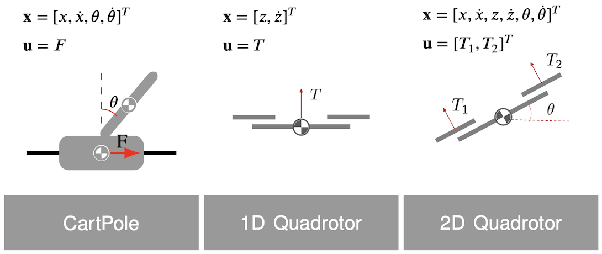
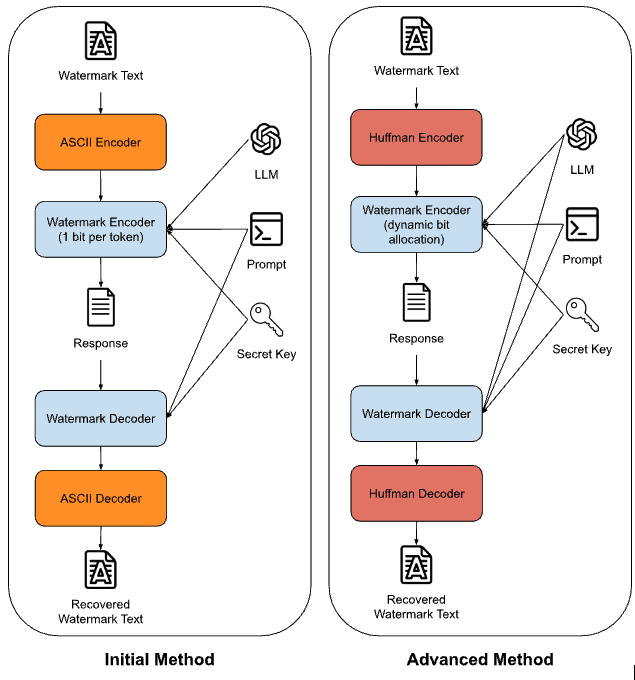
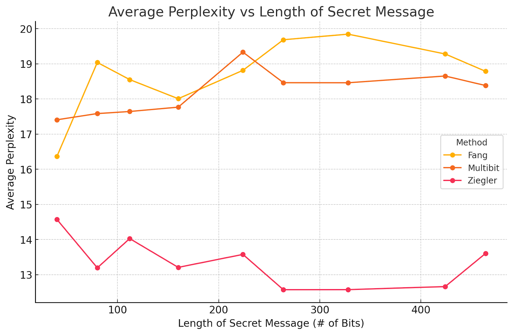

Bio
I am a junior at the University of Pennsylvania, pursuing a Bachelors in Computer Science and a Masters in Robotics. I'm interested in performance optimization and deep learning. More generally, I am also interested meta-cognition / meta-learning.
Projects
When I'm coding an application, I treat it as if it's going to be a real, complete product with actual users. For research, I try to first think of novel ideas to pursue. This makes the process more rewarding.
Currently, I am focusing on low-level programming and creating end-to-end projects of increasing difficulty.
Reading
I believe the habit of reading is important and something I try to keep up with even as things get busier.
Writings
I used to enjoy writing a lot before college, but it has been something I have lost touch with. Recently, I have been trying to pick it back up to flesh out and reflect on my thoughts and what I am learning about.
Projects
-
Lucky Cali - Strength Training Software


A VPS-hosted application with custom authentication, custom built front-end components, and low-level deployment. Visit the site at https://lucky-cali.com. Implementation details available on GitHub. Explore the site if you get the chance.
-
Smoothed Learned Dynamics for Trajectory Optimization

Research on optimizing neural dynamics for trajectory optimization using Monte Carlo smoothing techniques. Theory available in the [PDF]. Implementation details available on GitHub.
-
 Natural Language Processing Multi-Bit Watermarking
Developed methods for encoding hidden messages in AI-generated text using dynamic token partitioning and decoding. More details in the [PDF].
Reading List
-
Understanding Intuition (Currently Reading)
 Current Thoughts:
Current Thoughts:Penn has a rigorous introductory theoretical cs sequence. I was curious to know what differentiated top versus average performers. I personally improved by just spending significant amounts of time working on problems and ideas on my own. Reading this book is my attempt to deepen my understanding of what should really be going on in someone's head to improve their problem solving / critical thinking and more importantly what facilitates novel thoughts.
-
Mindset - The New Psychology to Success (Currently Reading)
 Current Thoughts:
Current Thoughts:This is a book I plan to more passively read when I find the time. I recently began to believe it would be good practice to start reading books on ideas that I want "bubbling up" in the back on my head.
-
Overcoming Gravity (Read)
 Thoughts:
Thoughts:Read the chapters on handstands and other skills. Well written book. Probably one of the best advanced resources I could find on body weight training.
-
The Cold Start Problem (Read)
 Thoughts:
Thoughts:I enjoyed the first section of the book where he speaks specfically on the cold start problem (scaling a networked product to have users before any users on actually on the application). It made lead me to think more about how the website I was building could be oriented as a "networked product". I eventually came up with the idea of scaling the product in two verticals. Having a competition side where users would compete against eachother and then a LLM centered learning resource. The users would initially be attracted by the learning resource then as the application scales more users would take advantage of the competition aspect. This idea was directly inspired by what I had been reading in this book.
-
Algorithms to Live By (Read)
 Thoughts: Pretty interesting book that lost its charm as I continued to read. I can now, at least, stare off into the distance intellectually and ponder the implications of "exploration versus exploitation" as it applies in the current context while speaking with friends, which is something I take full advantage of.
Thoughts: Pretty interesting book that lost its charm as I continued to read. I can now, at least, stare off into the distance intellectually and ponder the implications of "exploration versus exploitation" as it applies in the current context while speaking with friends, which is something I take full advantage of. -
The Psychology of Money (Read)
 Thoughts:
Thoughts:I wanted to learn key principles when it came to money management, and I think this book does a good job elucidating some. I left feeling like the best use of my time was to primarily invest conventionally and focus on other things as boring as that may sound. At least for now.
-
Man’s Search for Meaning (Read)
 Thoughts:
Thoughts:Read this book a while back. I chose to include this book because it really left a marked impact on me. It made me realized just how indomitable the human spirit and deep the rabbit hole of discipline and willpower can be.
Writing
-
Creative Pursuits The only way to create something profound is by creating something related to the thing(s) one obsesses over. Further, one can only really obsess in select specialized skills. To find things to specialize in, you must pursue the things that are authentically you.
In other words, we find:
Authentic, obsessive pursuits → profound creationsThis then emphasizes the importance of creation as a daily habit until creating is as natural as breathing. Whether the medium is coding, writing, etc. these pursuits will allow for fundamental creative development. Hard skills do not come easy; persistent effort in creative outlets will eventually yield exceptional results.
Focus on a few things and create things while you're learning. Keep doing this and you'll create something meaningful.
-
Scaling Seemingly Disjoint Skill Sets
We conjecture that people primarily scale skill sets for which they have a natural affinity for. This suggests an adaptability to a wide range of domains could be a rare skill set; especially orthogonal skills in what could be thought of as the "space" of those an individual can possess. Note that I am not referring to any particular domain but quite literally any skill set.Continuing, we consider what skills have the greatest return on investment to learn and more specifically which are congruent with a person's goals. Some combination of skills (based on some multivariate metric composed of "orthogonality", "congruency", etc ) could lead to a truly holistic, rare, and hard-earned skill set.
Note that, given the average life span, we augment our accumulated bag of skills to fit within these constraints.
A lot of people only develop things that they had a natural knack for and are afraid to stray far from what they know. Therefore, a willingness to stray and build deep technical skills for things that someone is not readily adept at gives someone a unique skill set.
-
The urgency and necessity for a unique written footprint Human-human connection → Human-robot connection → Robot-robot connection.
There is this notion of the "dead internet" theory. Robots infiltrating our online channels, running rampant pushing government agendas. The idea would enrage most people: these are echo chambers but they're our echo chambers.
The transformer architecture and internet scale data has placed us a few steps away from this future. But in a turn of events, it does not (readily) appear that there are overarching figures creating large scale tomfoolery, but rather individuals creating local misuse. Through these systems we can send an email, create a cover letter, reply to a message, but something is lost along that way. Discernible or not, there still remains a marked lack of authenticity.
Reduce quantity, improve quality, and attain a willingness for distinction; as the gap closes and these models become increasingly cogent, we can keep our communication authentically human by allowing ourselves to stray a bit out of distribution.
LLMs are becoming increasingly good at emulating human text. We can combat this by allowing ourselves and the way we write to deviate from the norm and be far less replicable.
-
Creating a Deep Learning Framework (Implementation) (Implementation)
System Simplifying Structuring your code at a high level can be intimidating but we can break it down into its simplest anatomical parts. At the highest level we are planning to do → make a guess, check that guess, change our guess. Sharpening things a little, we then think of things in the language of neural networks. The guess is encoded in the forward pass of our algorithm. When we make our check, we compare against a loss function. We correct our guess through back propagation and gradient descent.We can encode things through classes of Nodes, Operations (loosely analogous to edges in a canonical neural network depiction), and Optimizer to store and update gradients, propagate changes through back propagation, and define how we go about taking our gradient step respectively.
Something to note is there are likely different schools of thought when it comes to defining such a system each with their pros and cons. We can think of things as a balancing act where we are generally working to have thought things through enough such that ideas are "well thought out" but not spending too much time causing stunted progress and falling into the trap of premature optimization.
Back Propagation We first notice that the definition at each time step of our algorithm doesn't change. In other words, the problem remains the same for any node within our graph. This hints to us we can use recursion. For the $nth$ node along our path we recurse from the $n-1th$, further we can store the gradient calculated along our path and proceed in a bottom up dynamic programming fashion across paths, across nodes.
Why Zero out our stored gradient?
We don't want information from an earlier iteration of our algorithm to affect how we compute the gradient for the current one.Why recalculate our gradient at all?
After taking our gradient step, we can think of ourselves on a different part of our loss landscape. We need to find out the best way to make another step. In the code, this is shown through having a new loss value, which in turn affects our accumulated gradients, affecting the gradient step.Class-Based Design and Its Role in Autograd In designing this autograd engine, we structured our code using object-oriented programming principles. Each class in the system has a clear role, mirroring fundamental neural network concepts. This allowed us to map our mental model of a neural network more directly into code and organize our thoughts. This also improved readability of code and allows us extend our implementation to more operations and optimization techniques.
-
Creating a Deep Learning Framework (Pertinent Theory)
Backprop
Intuitions for Partial Derivatives and Chain Rule
For our simple optimization step we want to move in the direction of steepest descent in an effort to minimize our loss function. This means we calculate the gradient (steepest ascent) and move in the opposite direction. We then just need to accurately calculate the partials across all our nodes using the chain rule across layers so we can plug this gradient into our optimization equation.
Stepping away from a simplified mathematical interpretation for gradient descent it might be more valuable to consider what motivates these operations.
Take particular node n and consider all paths through our layers leading to our final loss node. Each path signifies an effect n has on our final output. If we can find the effect of the node on the operation and the operation on the loss . By similar logic we can effectively build backwards from our loss node to n. We extend our per path reasoning and sum up this effect across all paths to find the net effect of n. Recall that our edges, within our implementation, represent operations. The notion of "building backwards" is encoded within the chain rule and "finding the affect of the node" is our partial derivative.